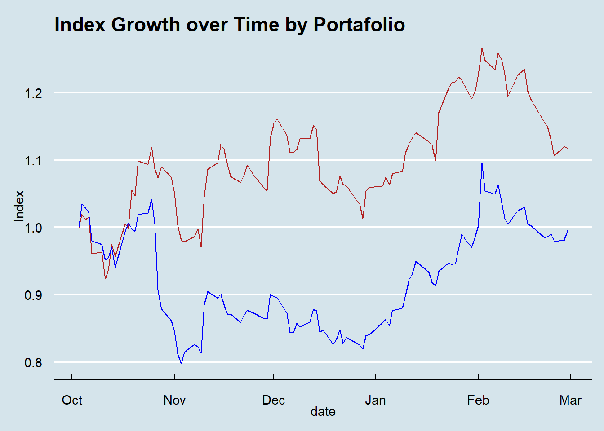

Warning: package 'tidyquant' was built under R version 4.2.3
Loading required package: lubridate
Loading required package: timechange
Attaching package: 'lubridate'
The following objects are masked from 'package:base':
date, intersect, setdiff, union
Loading required package: PerformanceAnalytics
Warning: package 'PerformanceAnalytics' was built under R version 4.2.3
Loading required package: xts
Warning: package 'xts' was built under R version 4.2.3
Loading required package: zoo
Warning: package 'zoo' was built under R version 4.2.3
Attaching package: 'zoo'
The following objects are masked from 'package:base':
as.Date, as.Date.numeric
################################### WARNING ###################################
# We noticed you have dplyr installed. The dplyr lag() function breaks how #
# base R's lag() function is supposed to work, which breaks lag(my_xts). #
# #
# If you call library(dplyr) later in this session, then calls to lag(my_xts) #
# that you enter or source() into this session won't work correctly. #
# #
# All package code is unaffected because it is protected by the R namespace #
# mechanism. #
# #
# Set `options(xts.warn_dplyr_breaks_lag = FALSE)` to suppress this warning. #
# #
# You can use stats::lag() to make sure you're not using dplyr::lag(), or you #
# can add conflictRules('dplyr', exclude = 'lag') to your .Rprofile to stop #
# dplyr from breaking base R's lag() function. #
################################### WARNING ###################################
Attaching package: 'PerformanceAnalytics'
The following object is masked from 'package:graphics':
legend
Loading required package: quantmod
Warning: package 'quantmod' was built under R version 4.2.3
Loading required package: TTR
Warning: package 'TTR' was built under R version 4.2.3
Registered S3 method overwritten by 'quantmod':
method from
as.zoo.data.frame zoo
#Create a chart to show who is winning at each day of the competition.ggplot(me, mapping =aes(x=date, y=adjusted, group=symbol, color=symbol)) +geom_point() +geom_line()+labs(title ="My Stocks", y="Stock Price Adjusted") +theme_economist()
p2<-ggplot()+geom_line(port1, mapping =aes(x = date, y = portfolio.wealthindex), color="firebrick")+geom_line(port2, mapping =aes(x = date, y = portfolio.wealthindex), color="blue") +geom_point()+labs(y="Index", title ="Index Growth over Time by Portafolio")+theme_economist() p2

Paragraph The first two graphs show how each person’s stocks choices performed. For me the Netflix stock is helping the competition, and Meta is helping my friend. The last plot shows the indexes. Since we bot started investing the same amount of money both my line (red) and my friends(blue) start at the same point. Then each line separates as the indexes change.